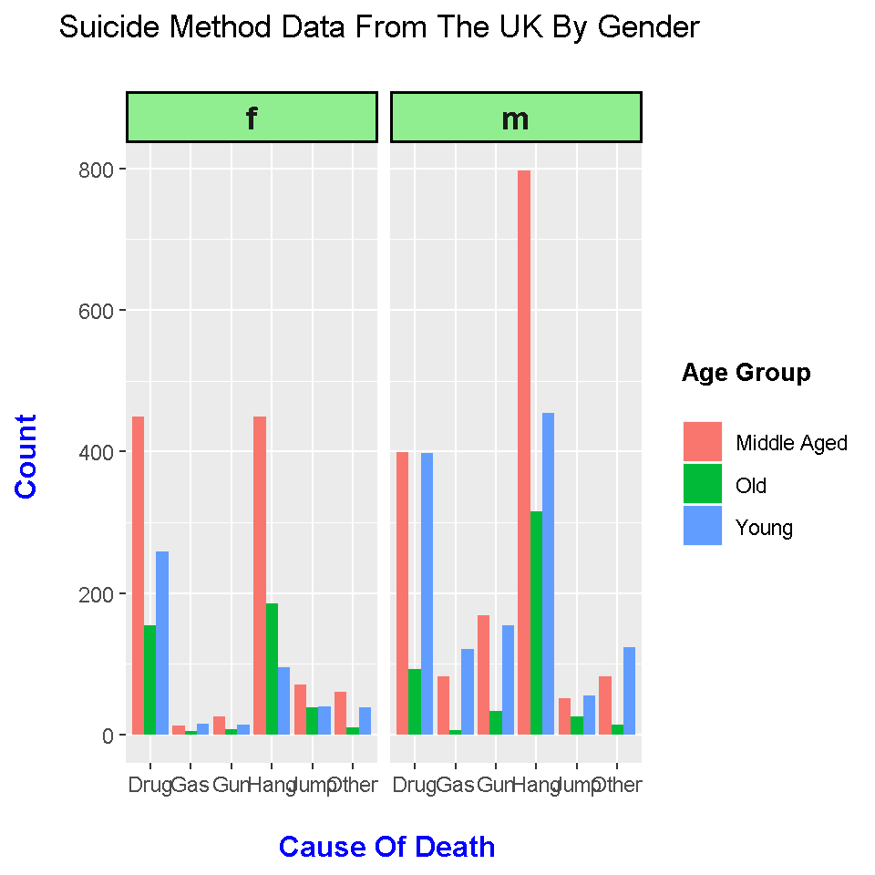

Hi. I have done experimentation with R and ggplot2 and have come up with a bar graph which combines many of ggplot2’s bar graph features.
The Suicide Data
The Bar Plot
Considering Gender With Facet Grid Bar Graph
Fixing The Facet Grid Bar Graph
For this example, I have chosen a dataset with the topic of suicide. This particular dataset can be found in the faraway library in R. The lines of code below shows the loading of the ggplot2 and faraway libraries.
# Advanced Bar Plot In R:
library(faraway) # Dataset package
library(ggplot2) # Data visualization
From the faraway package the suicide dataset is under the name suicide. I save the data suicide under the variable suicide_data. I then preview the data and check the data structure using head(), tail() and str() respectively.
suicide_data <- suicide
# Preview data:
head(suicide_data); tail(suicide_data)## y cause age sex
## 1 398 drug y m
## 2 121 gas y m
## 3 455 hang y m
## 4 155 gun y m
## 5 55 jump y m
## 6 124 other y m## y cause age sex
## 31 154 drug o f
## 32 5 gas o f
## 33 185 hang o f
## 34 7 gun o f
## 35 38 jump o f
## 36 10 other o f# Check structure of data:
str(suicide_data)## 'data.frame': 36 obs. of 4 variables:
## $ y : num 398 121 455 155 55 124 399 82 797 168 ...
## $ cause: Factor w/ 6 levels "drug","gas","gun",..: 1 2 4 3 5 6 1 2 4 3 ...
## $ age : Factor w/ 3 levels "m","o","y": 3 3 3 3 3 3 1 1 1 1 ...
## $ sex : Factor w/ 2 levels "f","m": 2 2 2 2 2 2 2 2 2 2 ...
The screenshot image below is from page 97 of the documentation of the faraway package. It provides a description and detailed information of the suicide dataset.
From head() and tail(), you can see that the column titles are not the greatest. You can rename column titles using colnames() in R.
# Rename columns:
colnames(suicide_data) <- c("Count", "Cause", "Age", "Sex")
I wanted my bar graph to look at the cause of death, the counts associated with the cause of death and I wanted to put all the three age groups in it too. This code allows for the creation of the bar graph visual below.
# Bar Plot (x axis for Cause, y axis for Counts, colours for Age):
ggplot(suicide_data, aes(x = Cause, y = Count, fill = Age)) +
geom_bar(stat = "identity", position = "dodge") +
labs(x = "\n Cause Of Death", y = "Count \n", fill = "Age Group \n",
title = "Suicide Method Data From The UK Results \n") +
scale_x_discrete(labels = c("Drug", "Gas", "Gun", "Hang", "Jump", "Other")) +
scale_fill_discrete(labels=c("Middle Aged", "Old", "Young")) +
theme(plot.title = element_text(hjust = 0.5),
axis.title.x = element_text(face="bold", colour="blue", size = 12),
axis.title.y = element_text(face="bold", colour="blue", size = 12),
legend.title = element_text(face="bold", size = 10))
Here are some notes about the code and the graph above:
I have aes(x = Cause, y = Count, fill = Age) for Cause of Death on the bottom, Count for the bar lengths and fill = Age for the different bar colours.
In geom_bar(), I have stat = “identity”. Having position = “dodge” is crucial for the side by side bars.
The labs() function allows for labels.
The scale_x_discrete() function allows for labeling my x-values in a neat way. If this scale_x_discrete() function is not there, I think it shows the x-values from the table such as drug, gun, other, etc.
scale_fill_discrete(labels=c(“Middle Aged”, “Old”, “Young”) allows for labeling the colours in the legend.
The theme() function allows for custom appearances such as font colours, font text and title centering.
The above graph is very nice indeed but it does not consider gender. We can create an alternative bar graph which includes gender on top of age group and cause of death.
The code and output can be found below.
facet_plot <- ggplot(suicide_data, aes(x = Cause, y = Count, fill = Age)) +
geom_bar(stat = "identity", position = "dodge") +
labs(x = "\n Cause Of Death", y = "Count \n", fill = "Age Group \n",
title = "Suicide Method Data From The UK By Gender \n") +
scale_x_discrete(labels = c("Drug", "Gas", "Gun", "Hang", "Jump", "Other")) +
scale_fill_discrete(labels=c("Middle Aged", "Old", "Young")) +
facet_grid(. ~ Sex) +
theme(plot.title = element_text(hjust = 0.5),
axis.title.x = element_text(face="bold", colour="blue", size = 12),
axis.title.y = element_text(face="bold", colour="blue", size = 12),
legend.title = element_text(face="bold", size = 10),
strip.background = element_rect(fill="lightgreen", colour="black", size=1),
strip.text = element_text(face="bold", size=rel(1.2)))
# Call facet plot:
facet_plot
The facet_grid(. ~Sex) allows for separate bar graphs by sex. The strip.background and strip.text attributes in theme() allows for customization of the bars associated with f and m.
This facet_grid output really helps in comparing the two graphs. One can easily see that male suicide counts are much higher than female suicide rates. The cause of death which really stands out in death by hanging for males denoted by Hang on the right graph. The number of young males who have committed suicide is quite alarming.
The only problem with the bar graph above is the f and m. I would like Female and Male instead.
Converting f and m to Female and Male will require a labeller. I have used the reference link http://stackoverflow.com/questions/3472980/ggplot-how-to-change-facet-labels to come up with the code below. The code below uses a list (which is like a dictionary in Python, correct me if I am wrong here). and a function called gender_labeller.
# Fixing the titles in the green background:
# This changes the f and m to Female and Male respectively.
# http://stackoverflow.com/questions/3472980/ggplot-how-to-change-facet-labels
genders <- list('f'="Female", 'm'="Male")
gender_labeller <- function(variable, value){
return(genders[value])
}
# Fixed facet plot:
facet_plot + facet_grid(. ~ Sex, labeller = gender_labeller)## Warning: The labeller API has been updated. Labellers taking `variable`and
## `value` arguments are now deprecated. See labellers documentation.This visual looks pretty good now as the labels are fixed.